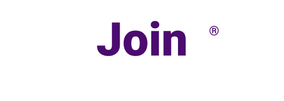
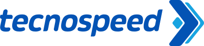

Hero e módulos inspirados nas experiências do gestor, da loja e das campanhas.
Direções Visuais
Três caminhos para uma 4unik mais agressiva, premium e produto-first.
Este laboratório usa como referência a energia visual das opções A e B, a estrutura institucional do site atual e os módulos centrais da plataforma: API, logística, estoque, campanhas, eventos, loja e operação.
Menos dependência do laranja, mais contraste, glow e ritmos visuais contemporâneos.
Estruturas para hero, métricas, bento grid, prova de produto e storytelling modular.
Pattern 01
Slate Copper
Um caminho mais premium e confiável, com base clara, hero escuro, cobre como acento e violeta como aceleração visual. É o padrão mais próximo da assinatura atual da marca.
Plataforma de recompensas corporativas
Operação, API e experiência premium na mesma camada.
A 4unik conecta campanhas, catálogo, integrações e logística com visibilidade real para RH, operação e tecnologia.
Referências do site


Pattern 02
Graphite Violet
A opção mais tecnológica. Dark mode, superfícies translúcidas, violeta dominante, laranja só como acento e uma linguagem visual fortemente orientada a software.
Corporate Gamification 2.0
Performance que gera ROI e operação que escala.
Para empresas que querem vender a 4unik como plataforma, não só como vitrine institucional. Hero mais direto, mais denso e com presença de produto.
Pedidos Hoje 148
Pontos Trocados 45.000
Estoque Crítico 3 itens
Mini-dashboard
Prova visual de produto para landing completa.
Inspirado na opção B: cards de métrica, ranking de produtos, painel de operação e indicadores de performance em uma interface única.
Fone Bluetooth JBL TWS142
Mochila Executiva Dell98
Kit Boas-Vindas67
Pattern 03
Petrol Ember
Uma direção mais editorial e nova, com petróleo, areia e teal. Mantém a seriedade B2B, mas abre mais espaço para uma personalidade fresca e menos previsível.
API, logística e campanhas em uma experiência só
Mais calor de marca, sem perder o software-first.
Direção pensada para aproximar o universo de kits, eventos e branding da 4unik com a sofisticação de uma plataforma enterprise de recompensas e integrações.